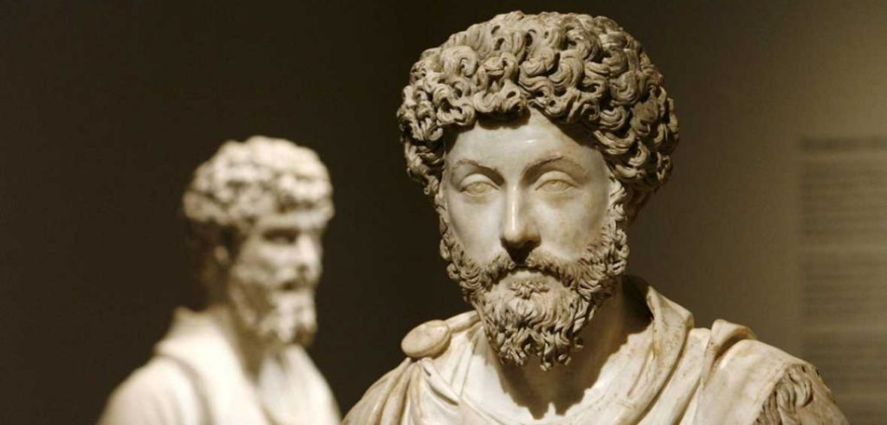

IDEOLOGIA
Su filosofía escrita en latín pertenece a la corriente del Estoicismo, una de las principales de la filosofía romana de su época, pero en sentido amplio, pues no se ciñó a principios firmes. Perteneció a la stoa nueva, junto con Epicteto y Marco Aurelio.Aceptó la división de la filosofía en lógica, ética y física, y la concibió como un camino a la sabiduría, como studium Virtutis. Pero no es un estoico más, pues prestó poca atención a la lógica, e incluso a la física.Además de filósofo, estadista y dramaturgo, destacó por ser un moralista, un rasgo común a la filosofía española, y por sus costumbres de vida austeras, que nada tenían que ver con la acumulación de una gran fortuna como político. Su sabiduría es felicidad, Bien Sumo.Practicó indiferencia ante los bienes temporales, incluyendo la muerte. Amó la naturaleza y la razón, fue imperturbable respecto a las pasiones, y quiso trato humano a los esclavos. De tendencias moralistas, Séneca pasó a la historia como el máximo representante del Estoicismo y Moralismo romano tras la plena decadencia de la República. La sociedad romana había perdido los valores de sus antepasados y degenerándose en turbulenta, amoral, antiética e interesada únicamente en la búsqueda del placer material, que la condujo a su propia decadencia.
¿QUIEN ES?

Lucio Anneo Séneca (en latín, Lucius Annaeus Seneca; Corduba, 4 a. C.-Roma, 65 d. C.), llamado Séneca el Joven para distinguirlo de su padre, fue un filósofo, político, orador y escritor romano conocido por sus obras de carácter moralista. Hijo del orador Marco Anneo Séneca, fue cuestor, pretor y senador del Imperio romano durante los gobiernos de Tiberio, Calígula, Claudio y Nerón, además de ministro, tutor y consejero del emperador Nerón. Séneca destacó como pensador, tanto como intelectual y político. Consumado orador, fue una figura predominante de la política romana durante la era imperial, siendo uno de los senadores más admirados, influyentes y respetados; a causa de este extraordinario prestigio, fue objetivo tanto de enemigos como de benefactores. De tendencias moralistas, Séneca pasó a la historia como el máximo representante del estoicismo y moralismo romano tras la plena decadencia de la república romana. La sociedad romana había perdido los valores de sus antepasados y se trastornó al buscar el placer en lo material y mundano, dando lugar a una sociedad turbulenta, amoral y antiética, que al final la condujo a su propia destrucción.
HISTORIA
Su filosofía escrita en latín pertenece a la corriente del Estoicismo, una de las principales de la filosofía romana de su época, pero en sentido amplio, pues no se ciñó a principios firmes. Perteneció a la stoa nueva, junto con Epicteto y Marco Aurelio.Aceptó la división de la filosofía en lógica, ética y física, y la concibió como un camino a la sabiduría, como studium Virtutis. Pero no es un estoico más, pues prestó poca atención a la lógica, e incluso a la física.Además de filósofo, estadista y dramaturgo, destacó por ser un moralista, un rasgo común a la filosofía española, y por sus costumbres de vida austeras, que nada tenían que ver con la acumulación de una gran fortuna como político. Su sabiduría es felicidad, Bien Sumo.Practicó indiferencia ante los bienes temporales, incluyendo la muerte. Amó la naturaleza y la razón, fue imperturbable respecto a las pasiones, y quiso trato humano a los esclavos. De tendencias moralistas, Séneca pasó a la historia como el máximo representante del Estoicismo y Moralismo romano tras la plena decadencia de la República. La sociedad romana había perdido los valores de sus antepasados y degenerándose en turbulenta, amoral, antiética e interesada únicamente en la búsqueda del placer material, que la condujo a su propia decadencia.